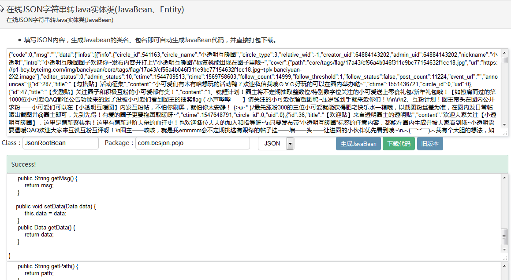

本篇记录一下使用 Fiddler 抓取网站 WebAPI 做一个抓取网页图片的小爬虫程序的大致过程，涉及到的步骤大致有以下几步：
Fiddler 获取网页访问特定网址的动作极其参数和返回，对于 JSON 格式的 WebAPI 返回值进行分析。
通过在线 JSON 转 POJO 工具进行 Java Bean 的生成。
使用 Retrofit2 封装对 WebAPI 的访问，结合SpringBoot JPA将信息存储到 MySQL 数据库。
对于未登录状态的 WebAPI 访问，进行 Cookie 的获取以及设置。
多线程并发查询，加快数据的获取速度。
已获取到的WebAPI示例。
一、Fiddler抓取WebAPI接口
Fiddler是一款网络抓包分析工具，与WireShark一样，都可以抓取主机访问网络的数据流，具体的使用过程网上有很多资料，这里就不详细描述了。
在这里以下面的网址为例，来分析网站相关页面的WebAPI：
打开Fiddler，设置过滤条件，将与我们的目标返回无关的信息过滤掉，然后访问上面的主页，即可在Fiddler界面上看到访问链接以及返回信息：
二、JSON返回值在线解析生成JavaBean
双击左侧的访问链接，在右侧就会显示Request和Response，其中Request中有访问的Header详细信息，Response中有返回数据的具体内容。我们这里以JSON数据为例：

在网上搜索在线JSON转实体类网站，将Response返回的JSON数据输入解析框，设置好Class名称以及包名，生成JavaBean即可下载由JSON转化成的Java POJO，后面就可以使用这些POJO结合Retrofit的Gson解析获取最终的存储对象。
三、Retrofit2对WebAPI访问的封装，以及SpringBoot JPA 对获取到的结果的存储
Retrofit2是一个网络访问框架，具体的使用细节网上也有很多资料，这里也不详细展开，下面主要分析大致的使用过程以及遇到的一些问题。
首先设计访问接口的Service：
1 | public interface BcyRequestService { |
然后对Retrofit2客户端进行初始化：
1 | private void initRetrofitAPI() { |
上面的 getClient() 方法是自定义的一个HttpClient，主要是针对Cookie的获取与设置进行了一些修改：
1 | /** |
最后进行WebAPI的调用：
1 | /**同步访问*/ |
获取到Picture对象之后就可以进行对象的存储了。
基本逻辑已经确立，在进行WebAPI查询的过程中可能存在一个比较严重的异常：
1 | com.google.gson.JsonSyntaxException: java.lang.IllegalStateException: Expected a string but was BEGIN_OBJECT at line 1 column 57992 path $.data.items[19].item_detail.replies[0] |
这个异常产生的原因是：在使用JSON字符串产生JavaBean时：
1 | public class Item_detail { |
上述 “private List
由于我们获取到的JSON返回是用一个特定的Request得到的，所以获取到的JSON字符串中的列表很可能为空，比如像下面的一个列表：
1 | replies : [] |
这种情况下，Gson就会将replies列表解析成为List
当然，如果已知具体的WebAPI定义，则不存在这个问题。
四、Cookie设置
在进行Request访问时，会从服务端获取Cookie，再将Cookie中的用户信息设置到Request的Cookie中，达到认证的功能，以下为Response中获取的Cookie以及Request Header中发送的Cookie示例：
Request Header:
1 | GET https://bcy.net/apiv3/common/hotCircleList?offset=20&_signature=aHtaaAAgEBWDbr3j6eLWfmh7WnAADWO HTTP/1.1 |
Response Cookie：
1 | Response sent 203 bytes of Cookie data: |
需要注意的是，我们初次访问一个WebAPI接口的时候，Request Header Cookie中的：
1 | _bcy_user_id=U2FsdGVkX181UhlS1LtAL1QLNCWhGcQ9annTwWC4+Y9epGqhfOuRucw7bG53x39Ir/aB5WPSHpE12Y9e7HPKOh1Qom0CfKObsfqjQV9AkcA=; _csrf_token=156c84b03e3a2808639f8fe166752c11; |
字段是为空的，需要在Response Cookie中的 “Set-Cookie” 获取，是一种先登录，后访问的模式。具体的设置Request Header Cookie方法以及获取Response Cookie的方法在Retrofit2的初始化getClient()方法里面有详细的过程。
五、多线程并发查询
在SpringBoot的入口类开启异步：
1 |
|
之后再需要异步处理的方法上添加异步注解：
1 |
|
这里的 CountDownLatch 对象保证多线程访问时所有的线程任务全部处理完毕之后才退出主线程，避免子线程刚开启时主线程退出造成所有的子线程全部退出，任务不能正常执行的情况。
对于多线程数据存储的情况，将存储方法用 synchronized 加锁：
1 | private synchronized void savePicture(Picture pic) { |
避免数据的重复插入。
六、已获取到的WebAPI示例
1 | 【1】HotTag获取 |